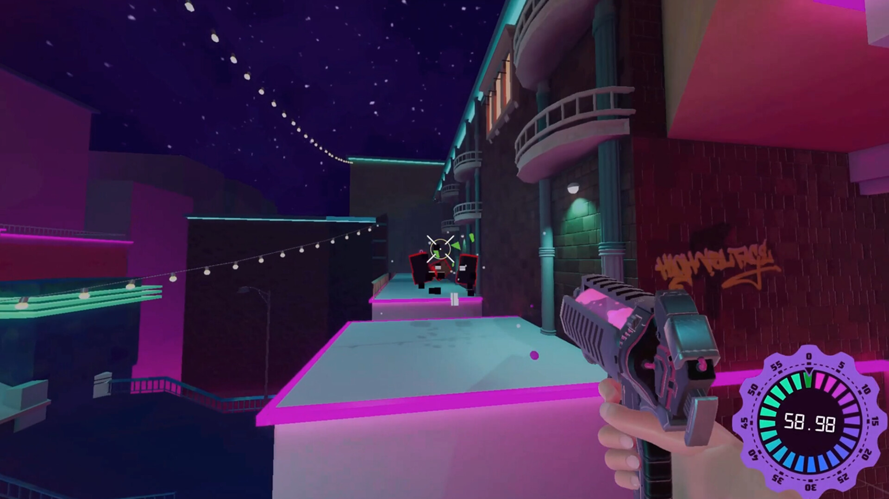
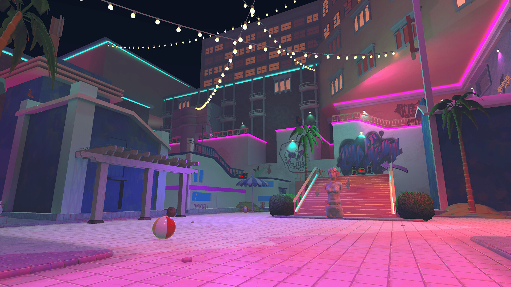
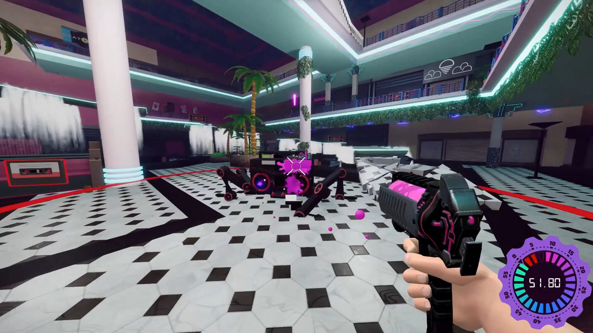
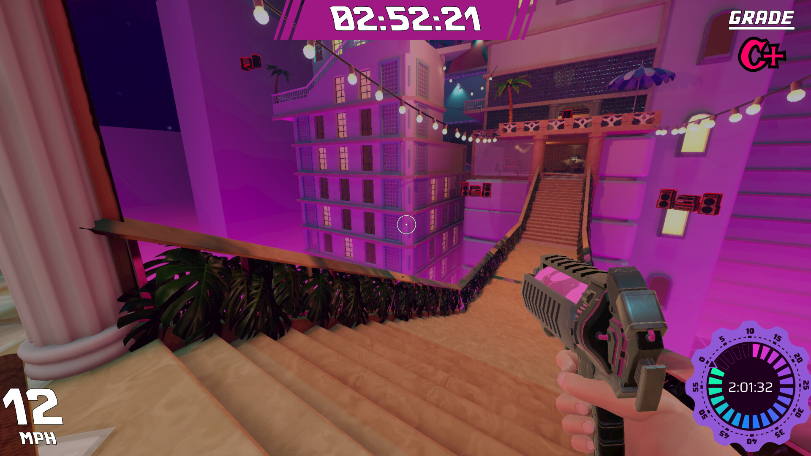
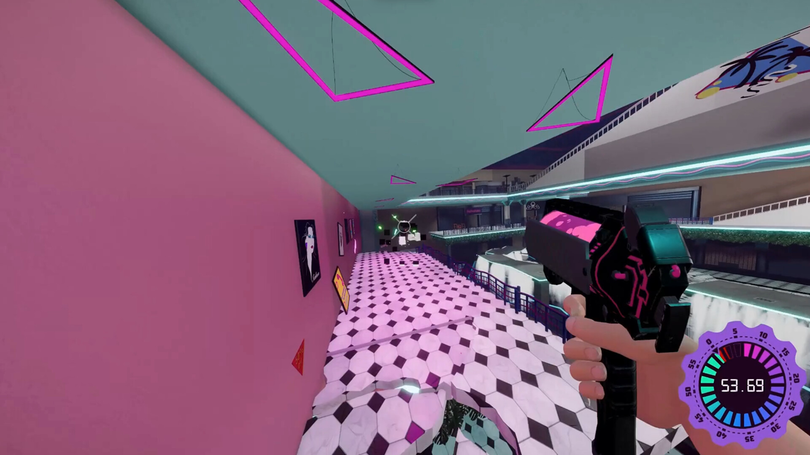

Process
Tools in Action


Sprint planning in Jira · Documentation in Confluence
Capstone Project · Steam · 2024
A fast-paced, vaporwave-inspired movement shooter where style meets speed.
My Role
Fast Forward was my Bachelor's capstone project at LWIT / Quantum Shrimp Studio — a year-long production where I served as Producer, responsible for keeping a cross-discipline team aligned from pre-production through final delivery on Steam.
I owned the full production pipeline: sprint cadence, backlog, milestone reviews, retrospectives, and inter-discipline coordination. When blockers surfaced, I triaged, escalated, or re-scoped. When scope threatened the timeline, I made the call. The game shipped on Steam in 2024.
Gallery





Process
Sprint planning in Jira · Documentation in Confluence